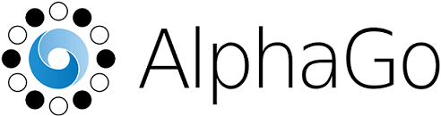

Le Programme Alpha GO

Qu'est-ce que Alpha GO
AlphaGo est un programme informatique capable de jouer au jeu de go, développé par l'entreprise britannique originellement appelée DeepMind Technologies Limited, une entreprise britannique spécialisée dans l'intelligence artificielle créée en 2010, et rachetée par Google en 2014 qui se nomme maintenant Google DeepMind.
La complexité de la programmation
Le go est un jeu de société originaire de Chine. Il oppose deux adversaires qui placent à tour de rôle des pierres, respectivement noires et blanches, sur les intersections d'un tablier quadrillé appelé goban. Le but est de contrôler le plan de jeu en y construisant des « territoires ». Les pierres encerclées deviennent des « prisonniers », le gagnant étant le joueur ayant totalisé le plus de territoires et de prisonniers.
Programmer un joueur de go est considéré comme un problème bien plus difficile que pour d'autres jeux, comme les échecs, en raison d'un bien plus grand nombre de combinaisons possibles, mais aussi parce que la condition de victoire et les objectifs intermédiaires sont beaucoup moins clairs, ce qui rend extrêmement complexe l'utilisation de méthodes traditionnelles telles que la recherche exhaustive. Quand l'ordinateur d'IBM Deep Blue a battu le champion du monde d'échecs Garry Kasparov en 1997, les ordinateurs étaient alors limités au niveau des joueurs amateurs faibles au jeu de go.
L'ascension du programme
Le monde de la recherche voit en cette difficulté un défi à relever et améliore ses algorithmes, et le niveau des programmes s'accélère dans les années 2010. En 2012, le programme Zen a battu Takemiya Masaki (9e dan) deux fois, avec un handicap de 5 et 4 pierres. En 2013, Crazy Stone (Crazy Stone est un logiciel capable de jouer au go) a battu Ishida Yoshio (9e dan) avec un handicap de 4 pierres.
L'apogée d'Alpha GO et sa fin
En octobre 2015, il devient le premier programme à battre un joueur professionnel (le français Fan Hui qui détenait le titre de champion d’europe) sur un goban de taille normale (19×19) sans handicap. Il s'agit d'une étape symboliquement forte puisque le programme joueur de go est alors un défi complexe de l'intelligence artificielle.
En mars 2016, il bat Lee Sedol, un des meilleurs joueurs mondiaux (9e dan professionnel).
Le 27 mai 2017, il bat le champion du monde Ke Jie et la retraite du logiciel est annoncée.